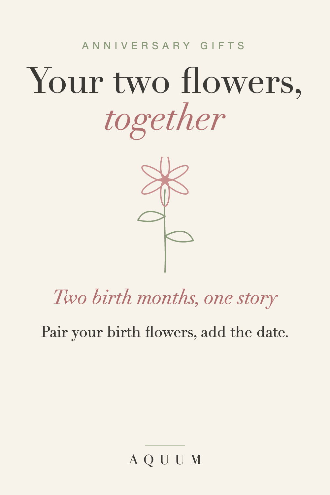

Birth Flower Anniversary Gifts: Your Two Flowers, Together
2026-09-30
Written by the team behind Aquum, a small birth flower gift shop. How we make money.

An anniversary gift should be about the two of you, and nothing is more "the two of you" than your two birth flowers side by side. Each flower carries its own meaning; together, they tell a small story about your relationship.
Find your two flowers
Look up both birth months in what is my birth flower, or type both birthdays into the birth flower finder. Then read the two meanings together:
- Rose (June) + Violet (February): love in all its forms, and quiet loyalty.
- Carnation (January) + Aster (September): love that doesn't give up, and wisdom and patience.
- Daisy (April) + Larkspur (July): uncomplicated joy, and an open heart.
- Lily of the Valley (May) + Chrysanthemum (November): happiness returns, and honest friendship.
Whatever your pair, there's almost always a line in it about the two of you.
Anniversary gift ideas
- Matching shirts or mugs, one with each flower, so you each carry the other's.
- A print with both flowers and your wedding date or the day you met.
- The wedding flower plus your two birth flowers, for a bigger milestone.
- Plant both, in the garden or in pots, and watch them bloom every year.
Add the date
A birth flower is about who you are. A date is about what you've built. Put them together and the gift covers both: "Your carnation, my aster, and June 14th."
What to write in the card
"Your flower means love that doesn't give up. Mine means patience. Somehow that's exactly us."
For more romantic ideas, see our guide to birth flower gifts for your wife or girlfriend. Made-to-order gifts take about a week to be made and shipped in the US, so order ahead of the date.